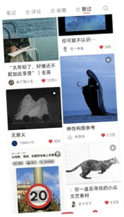
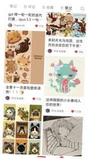
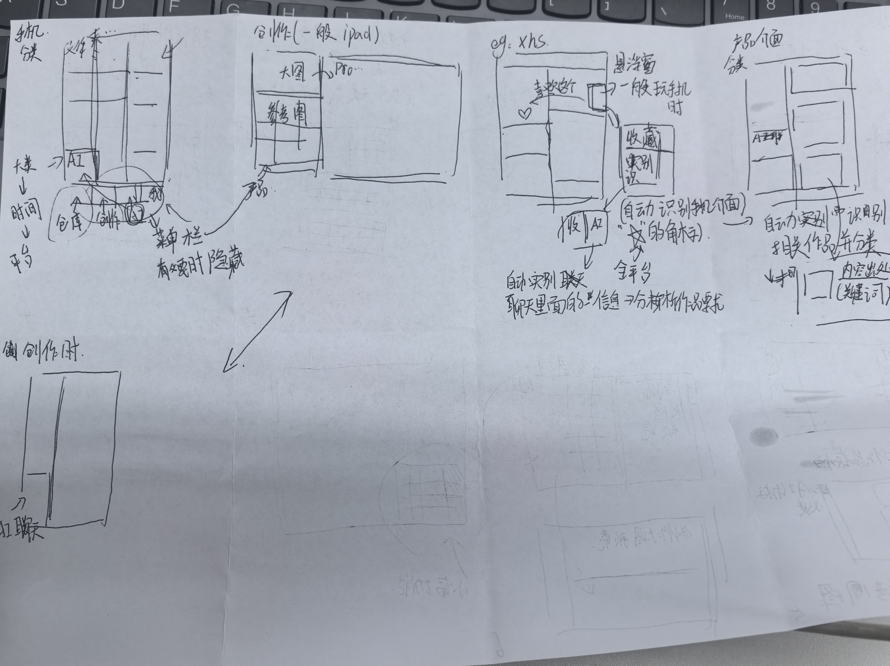
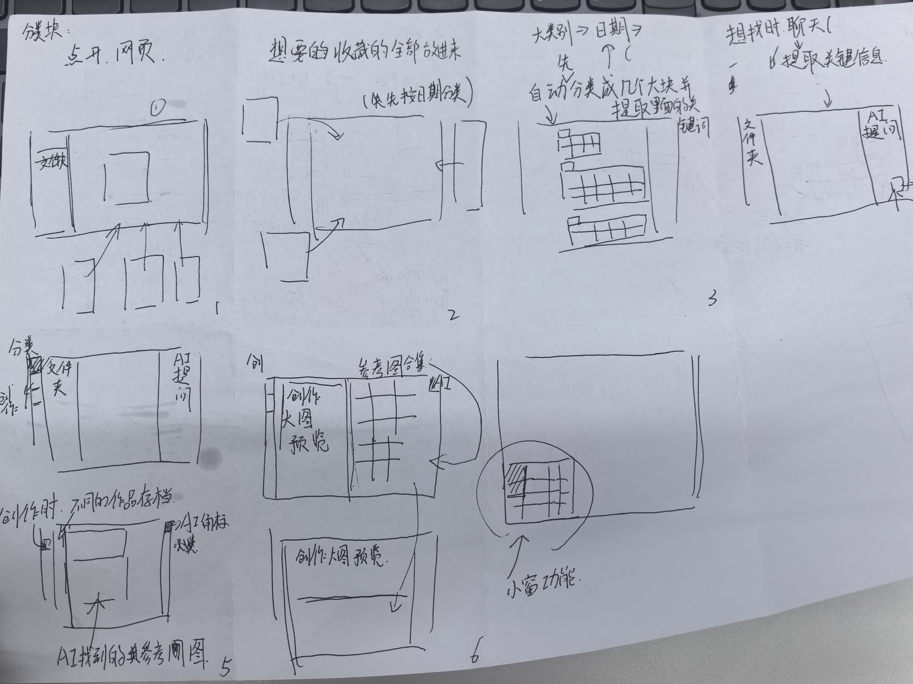
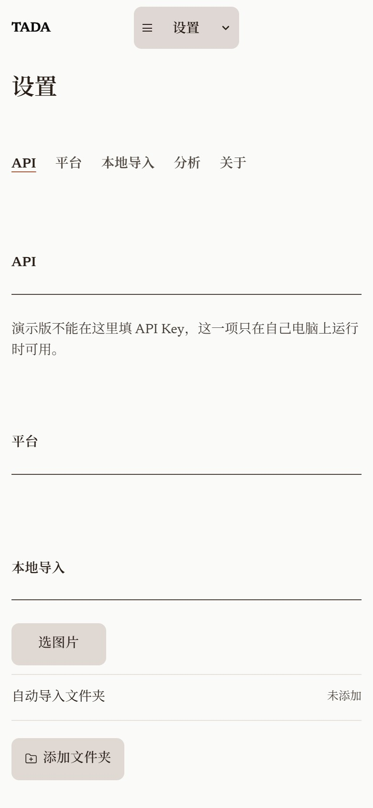
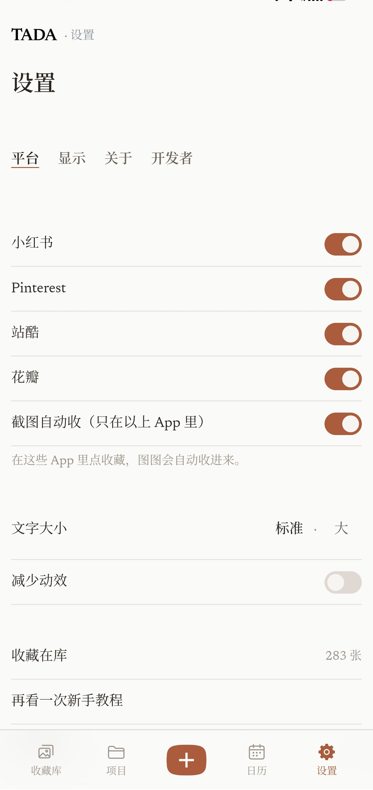

01 DISCOVER · 发现问题
我明明收藏过
从生活中发现问题
两位组员先各写各的：13 条 + 12 条，共 25 个真实生活 Bug。
陈宇彤 · 13 条
- 01投屏小字看不清
- 02找素材风格比例总对不上
- 03Figma 批量改总漏几个
- 04文件在另一台电脑上
- 05几个软件来回导，糊了
- 06屏幕和打印颜色不一样
- 07设计文件版本太多
- 08C 盘满了不敢删
- 09半夜用电脑吵室友
- 10重要通知被淹没
- 11洗澡总带毛巾
- 12公厕手机没地方放
- 13充电头把插孔挡了
潘奕好 · 12 条
- 14水杯漏了泡坏充电器
- 15类纸膜老掉、笔尖磨
- 16想不起前几天干了啥
- 17十几块十几块地乱买
- 18数据线缠成一团
- 19睡前刷手机停不下来
- 20画着画着就驼背了
- 21忘了家里已经有了
- 22侧躺戴耳机压耳朵
- 23收集的参考图找不到
- 24拍的 PPT 照片乱成一团
- 25起夜开灯太刺眼
01 DISCOVER · 发现问题
真实的收藏困境
这种晚上，我们都经历过。




算了，重新搜吧。
收藏容易，找回却很难
把初步发现的痛点压缩成四个关键词。
这只是我们自己的困扰，还是更多创作者共同面对的问题？
02 RESEARCH · 用户调研
我们问了谁，怎么做的？
调研对象与规模
调研方式：线上问卷 + 线上补充访谈。问卷通过朋友圈、QQ 动态、群聊和小红书传播；另设 6 个深入调研名额，用于继续追问收藏、找回与整理习惯。
真实调研过程


02 RESEARCH · 用户调研
三大核心发现
大家把参考存得很分散
39 / 52使用两种及以上保存方式
保存方式 · 多选题 · n = 52
“特别喜欢的会保存图片放在相册的文件夹里”
访谈原话 · 节选
收藏方式分布
- 收藏在原平台43 人
- 保存到设备37 人
- 复制链接或发给自己27 人
- 使用专门收藏软件7 人
7 人数据来自现有问卷整理补充；发现一 PPT 展示前三项。
 +
+“明明收藏过”，找起来还是麻烦
46人作答找回困难题 · 多选
不是“有没有收藏”，而是收藏之后能不能找回来。
“记忆里有这张参考，但没通过右上角文字搜索搜到，因为只有文件名信息”
访谈原话 · 节选
重新查找时遇到的问题
- 收藏太多，不好翻30 人
- 想不起关键词24 人
- 只记得图片大概样子22 人
- 忘记存在哪里20 人
- 原内容或链接失效11 人
前四项来自发现二 PPT；链接失效 11 人来自现有问卷整理补充。
大家其实还会再次使用以前收藏的东西
49 / 52表示经常或偶尔会再次使用
复用频率 · 单选题 · n = 52
“前两三天找参考花太多时间了”
访谈原话 · 节选
“希望保存的时候本地可以弹小窗选相册分类”
访谈原话 · 节选
- 10经常使用
- 39偶尔使用
- 3基本不再使用
期待的收藏体验改进
- 自动整理和分类37 人
- 通过图片或描述找回33 人
- 更方便地保存不同平台内容24 人
- 创作时更方便查看和使用23 人
改进期待 · 多选题 · n = 52。此处只呈现用户期待，不直接等同已确定功能。
02 RESEARCH · 用户调研
假设验证与调研总结
收藏方式分散
得到支持
39 / 52 使用两种及以上保存方式。
收藏内容难以找回
得到支持
30 人觉得收藏太多，24 人想不起关键词，22 人只记得画面。
收藏后基本不再使用
被推翻
49 / 52 表示经常或偶尔会再次使用。
来源 · 开题判断 PPT；完整表述与证据以原始 PPT 为准。
CHAPTER SUMMARY · 章节总结
这并不是我们独有的困扰。
许多受访创作者都面临素材收藏分散、找回困难的问题，而他们仍然有再次使用素材的需求。
那么，造成这些困难的原因是什么？03 PROBLEM DEFINITION · 问题定义
我们真正需要解决的问题是什么？
HOW MIGHT WE · 核心问题定义
如何让用户即使只记得画面，也能快速找回以前收藏的参考图？
.jpg)
.jpg)
04 IDEATE · 方案探索
竞品分析与方案确定
通过分析现有素材管理与内容收藏工具，明确设计机会，并结合真实用户需求确定产品方向。
查看完整竞品分析 ↗Eagle
直接竞品核心优势专业素材管理，分类整理清晰。
主要不足偏整理工具，跨平台收藏与快速找回能力较弱。
核心优势适合发现灵感，浏览和收藏图片方便。
主要不足更偏内容推荐，收藏后不方便系统整理与回找。
小红书
替代型竞品核心优势内容丰富，符合用户日常收藏习惯。
主要不足收藏分散、信息杂，后期难以快速找回目标素材。
为什么确定这个方向？
我们看到的机会
- 用户已经习惯在内容平台里顺手收藏。
- 真正的痛点是收藏之后找不回。
- 收藏的最终目的，是在创作时继续用上。
真实用户需求
37 人希望改善素材整理
33 人希望改善素材找回
24 人希望实现跨平台收藏
CHAPTER SUMMARY · 章节总结
最终产品方向
统一收藏入口，用 AI 找回素材，辅助创作。
05 PRODUCT DESIGN · 产品设计
从名字到视觉
产品命名：从灵感到名称
取自「突然想起」的谐音，寓意重新找回收藏素材时的惊喜。
品牌配色：确定视觉基调
Logo 与字体：从探索到定稿
05 PRODUCT DESIGN · 产品设计
从手绘构想到多端设计
手机 / iPad 端构想

+探索移动设备上的产品界面与交互方式。
网页端构想

+探索产品在大屏幕上的界面布局。
以上内容仅代表早期设计构想，不代表不同设备之间存在功能限制。
从手绘草图出发，逐步确定以手机端为主的产品设计方案。
05 PRODUCT DESIGN · 产品设计
为什么是「收、找、用」？
从用户调研中发现的问题出发，将产品设计划分为三个核心功能。
01 · COLLECT
收
用户遇到的问题素材分散在不同平台，收藏和整理不方便。
我们的设计方案多渠道统一收集
- 链接导入
- 相册批量导入
- 手机截图导入
- 小红书进阶模式
02 · FIND
找
用户遇到的问题记得素材的画面，却想不起名称和收藏位置。
我们的设计方案AI 智能检索
- 按画面记忆搜索
- 关键词检索
- 相似素材推荐
03 · CREATE
用
用户遇到的问题收藏了大量素材，却难以直接用于创作。
我们的设计方案项目管理与灵感板
- 项目整理
- 多种画板版式
- 素材自由编辑
- 图片与 PDF 导出
让素材收得进、找得到、用得上。
这一页用于总览 TADA 的四种收集方式：链接导入、相册批量导入、手机截图导入、小红书进阶模式。
点击左侧 A / B / C / D，可分别查看对应流程图与真实操作录屏。
搜索词：文字排版
251 → 8从 251 张收藏素材中检索出 8 张相关素材。搜索词：黑色猫
0 → 相似候选当精准搜索结果为 0 时，系统仍会提供可能相关的候选素材。以上数字来自实际演示流程中的搜索案例，用于说明产品逻辑。

自然语言检索与找相似 · 真实竖屏录屏
05 PRODUCT DESIGN · 产品设计
从素材收藏到实际创作
CHAPTER SUMMARY · 章节总结
让素材存得方便、找得回来、用得起来。
06 TEST & ITERATE · 测试迭代
根据用户反馈，我们改了什么？


初始设计 界面杂乱，日历功能不明确
逐步调整 优化界面结构与信息排版
.jpg)
最终优化 每日灵感 · 按日期查看 · 收藏热力图
.jpg)
.jpg)


修改前的问题
界面层级不清晰浏览与查找设置不便


+

+问题修复
✓优化界面排版梳理信息层级
＋ 新增功能
＋字体大小调整按习惯设置
＋进阶功能设置自主开启 / 关闭图图导入
CHAPTER SUMMARY · 章节总结
让素材收集、查找和创作更加方便。
07 FINAL PRODUCT · 最终成果
体验完整的 TADA!
减少寻找参考素材的时间，把更多时间留给创作。
基于设计创作场景的耗时估算，非正式计时测试结果。